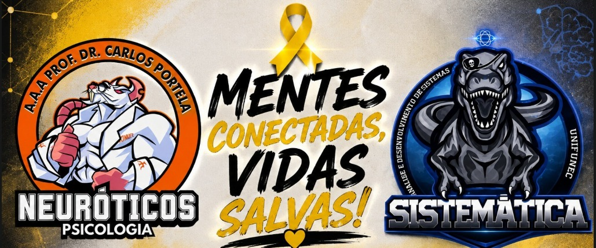

🧠
Psicologia
Falar sobre sentimentos, reconhecer sinais e entender a importância de buscar apoio.

Uma iniciativa que une ADS e Psicologia para incentivar a escuta, o acolhimento, a informação e a valorização da vida.
Falar sobre sentimentos, reconhecer sinais e entender a importância de buscar apoio.
Usar a tecnologia para aproximar pessoas, compartilhar informação e criar experiências que acolhem.
Cuidado também é presença, escuta e disposição para estar ao lado de alguém.
Não precisa encontrar a resposta perfeita. Permita-se reconhecer o que está sentindo.
Ouvir sem julgar também é uma forma de cuidar.
Momentos de informação, conversa e acolhimento.
Apresentação da proposta e início das ações.
Um espaço para diálogo, escuta e troca.
Tecnologia, relações humanas e cuidado emocional.
* Datas, horários e locais podem ser atualizados pela organização.
Procure alguém de confiança ou ajuda profissional. O CVV atende pelo 188, gratuitamente e 24 horas por dia.